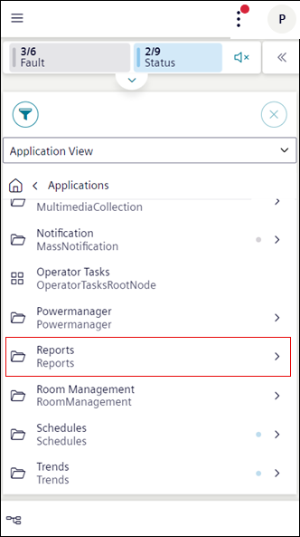

Report workspace displays a list of reports. To view the report, navigate to Applications > Reports in the Application View. You can also select the reports by tapping next to the folder.

History Section
1
History
Displays logs of the generated report in PDF and Excel format.
2
Generate
Displays options to generate a report in PDF, Excel or Both formats. The generated report files displays in History area. For more information, see Export a Report File in Reports.
3
Displays the following options: -Download: Allows you to download a report file locally. For more information, see Download Report Files in Reports. -Preview: Navigates you to the preview area. Tap Open in new tab to view the report preview in a new tab. For more information, see Display a Report preview in Reports. -Delete: Deletes the report file from the history area. For more information, see Delete Report Files in Reports.